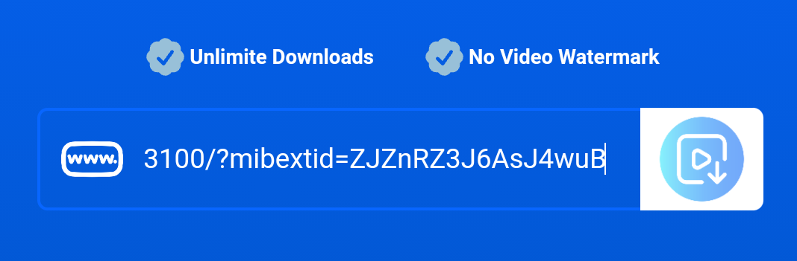
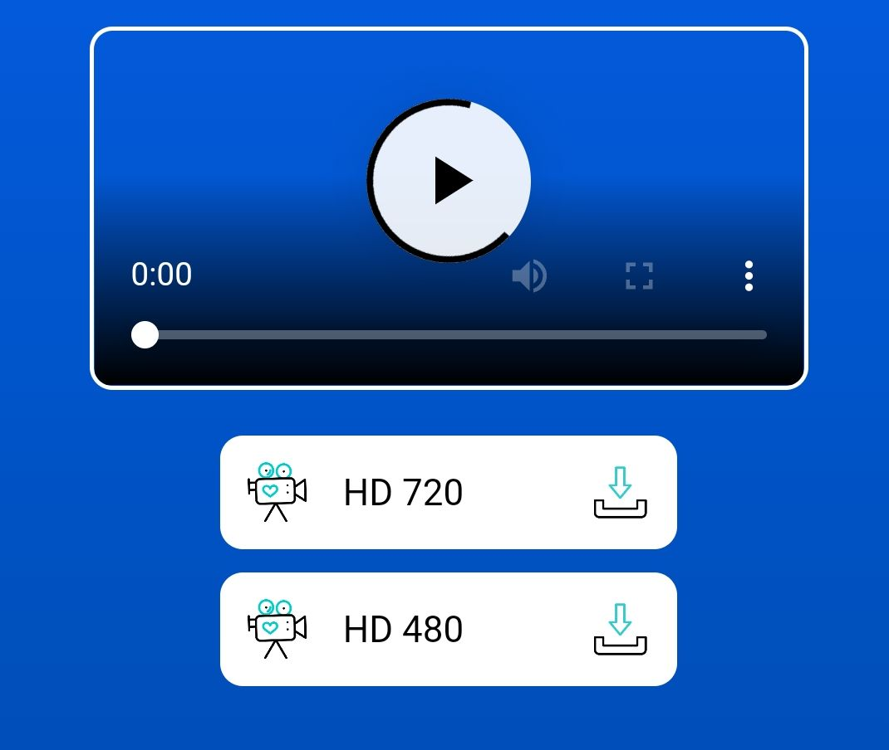
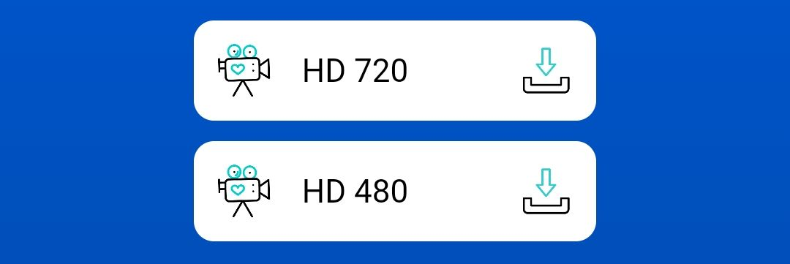

Download Facebook videos with our Tool FB Downloader.
Unlimite Downloads
No Video Watermark
Why you should use FB Downloader?
FB Downloader- is the best Facebook video downloader to help you to download Facebook videos in hight quality.
Download Facebook video to your phone or PC or tablet with highest quality Using our FB video downloader with your browser.
No need to install any apps, Support both Android, and iOS.

Highest quality
FB Downloader - helps you to download Facebook Videos in FULL HD, and 4K with sound. Most of the current tools only allow HD videos.
Easy and Fast
FB Downloader - for every device (mobile phone, PC, or tablet), and every OS (Android, IOS). You don't need to install any software.
It's Free
FB Downloader - It's always be free. We only place some ads to support our development.
How to Download FB Videos?
Copy and past FB video link(url).
From Facebook, copy the link of a video that you want to download, then past the link in Download Box.
 Search for FB video.Wait for our server to process and give you the results.
 Shows the Quality.Select the video quality that you want and pres download icon.
